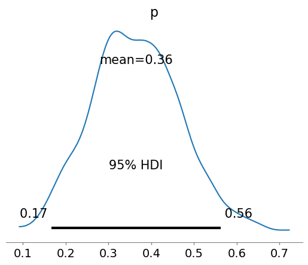

Intro to Probabilsitic Programming (PyMC)
Intro to Probabilsitic Programming (PyMC)#
%pip install pytensor pymc
Collecting pytensor
Downloading pytensor-2.18.6-cp311-cp311-manylinux_2_17_x86_64.manylinux2014_x86_64.whl.metadata (9.7 kB)
Collecting pymc
Downloading pymc-5.10.3-py3-none-any.whl.metadata (10 kB)
Requirement already satisfied: setuptools>=48.0.0 in /opt/conda/lib/python3.11/site-packages (from pytensor) (68.2.2)
Requirement already satisfied: scipy>=0.14 in /opt/conda/lib/python3.11/site-packages (from pytensor) (1.12.0)
Requirement already satisfied: numpy>=1.17.0 in /opt/conda/lib/python3.11/site-packages (from pytensor) (1.26.3)
Requirement already satisfied: filelock in /opt/conda/lib/python3.11/site-packages (from pytensor) (3.13.1)
Collecting etuples (from pytensor)
Downloading etuples-0.3.9.tar.gz (30 kB)
Preparing metadata (setup.py) ... ?25ldone
?25hCollecting logical-unification (from pytensor)
Downloading logical-unification-0.4.6.tar.gz (31 kB)
Preparing metadata (setup.py) ... ?25ldone
?25hCollecting miniKanren (from pytensor)
Downloading miniKanren-1.0.3.tar.gz (41 kB)
━━━━━━━━━━━━━━━━━━━━━━━━━━━━━━━━━━━━━━━━ 41.3/41.3 kB 4.2 MB/s eta 0:00:00
?25h Preparing metadata (setup.py) ... ?25ldone
?25hCollecting cons (from pytensor)
Downloading cons-0.4.6.tar.gz (26 kB)
Preparing metadata (setup.py) ... ?25ldone
?25hRequirement already satisfied: typing-extensions in /opt/conda/lib/python3.11/site-packages (from pytensor) (4.8.0)
Collecting arviz>=0.13.0 (from pymc)
Downloading arviz-0.17.0-py3-none-any.whl.metadata (8.6 kB)
Requirement already satisfied: cachetools>=4.2.1 in /opt/conda/lib/python3.11/site-packages (from pymc) (5.3.2)
Requirement already satisfied: cloudpickle in /opt/conda/lib/python3.11/site-packages (from pymc) (3.0.0)
Collecting fastprogress>=0.2.0 (from pymc)
Downloading fastprogress-1.0.3-py3-none-any.whl (12 kB)
Requirement already satisfied: pandas>=0.24.0 in /opt/conda/lib/python3.11/site-packages (from pymc) (2.2.0)
Requirement already satisfied: matplotlib>=3.5 in /opt/conda/lib/python3.11/site-packages (from arviz>=0.13.0->pymc) (3.8.2)
Requirement already satisfied: packaging in /opt/conda/lib/python3.11/site-packages (from arviz>=0.13.0->pymc) (23.2)
Collecting xarray>=0.21.0 (from arviz>=0.13.0->pymc)
Downloading xarray-2024.1.1-py3-none-any.whl.metadata (11 kB)
Collecting h5netcdf>=1.0.2 (from arviz>=0.13.0->pymc)
Downloading h5netcdf-1.3.0-py3-none-any.whl.metadata (13 kB)
Collecting xarray-einstats>=0.3 (from arviz>=0.13.0->pymc)
Downloading xarray_einstats-0.7.0-py3-none-any.whl.metadata (5.8 kB)
Requirement already satisfied: python-dateutil>=2.8.2 in /opt/conda/lib/python3.11/site-packages (from pandas>=0.24.0->pymc) (2.8.2)
Requirement already satisfied: pytz>=2020.1 in /opt/conda/lib/python3.11/site-packages (from pandas>=0.24.0->pymc) (2023.3.post1)
Requirement already satisfied: tzdata>=2022.7 in /opt/conda/lib/python3.11/site-packages (from pandas>=0.24.0->pymc) (2023.4)
Requirement already satisfied: toolz in /opt/conda/lib/python3.11/site-packages (from logical-unification->pytensor) (0.12.0)
Collecting multipledispatch (from logical-unification->pytensor)
Downloading multipledispatch-1.0.0-py3-none-any.whl.metadata (3.8 kB)
Requirement already satisfied: h5py in /opt/conda/lib/python3.11/site-packages (from h5netcdf>=1.0.2->arviz>=0.13.0->pymc) (3.10.0)
Requirement already satisfied: contourpy>=1.0.1 in /opt/conda/lib/python3.11/site-packages (from matplotlib>=3.5->arviz>=0.13.0->pymc) (1.2.0)
Requirement already satisfied: cycler>=0.10 in /opt/conda/lib/python3.11/site-packages (from matplotlib>=3.5->arviz>=0.13.0->pymc) (0.12.1)
Requirement already satisfied: fonttools>=4.22.0 in /opt/conda/lib/python3.11/site-packages (from matplotlib>=3.5->arviz>=0.13.0->pymc) (4.47.2)
Requirement already satisfied: kiwisolver>=1.3.1 in /opt/conda/lib/python3.11/site-packages (from matplotlib>=3.5->arviz>=0.13.0->pymc) (1.4.5)
Requirement already satisfied: pillow>=8 in /opt/conda/lib/python3.11/site-packages (from matplotlib>=3.5->arviz>=0.13.0->pymc) (10.2.0)
Requirement already satisfied: pyparsing>=2.3.1 in /opt/conda/lib/python3.11/site-packages (from matplotlib>=3.5->arviz>=0.13.0->pymc) (3.1.1)
Requirement already satisfied: six>=1.5 in /opt/conda/lib/python3.11/site-packages (from python-dateutil>=2.8.2->pandas>=0.24.0->pymc) (1.16.0)
Downloading pytensor-2.18.6-cp311-cp311-manylinux_2_17_x86_64.manylinux2014_x86_64.whl (2.0 MB)
━━━━━━━━━━━━━━━━━━━━━━━━━━━━━━━━━━━━━━━━ 2.0/2.0 MB 52.3 MB/s eta 0:00:00:00:01
?25hDownloading pymc-5.10.3-py3-none-any.whl (472 kB)
━━━━━━━━━━━━━━━━━━━━━━━━━━━━━━━━━━━━━━━━ 472.4/472.4 kB 34.1 MB/s eta 0:00:00
?25hDownloading arviz-0.17.0-py3-none-any.whl (1.7 MB)
━━━━━━━━━━━━━━━━━━━━━━━━━━━━━━━━━━━━━━━━ 1.7/1.7 MB 60.9 MB/s eta 0:00:00
?25hDownloading h5netcdf-1.3.0-py3-none-any.whl (43 kB)
━━━━━━━━━━━━━━━━━━━━━━━━━━━━━━━━━━━━━━━━ 43.6/43.6 kB 3.5 MB/s eta 0:00:00
?25hDownloading xarray-2024.1.1-py3-none-any.whl (1.1 MB)
━━━━━━━━━━━━━━━━━━━━━━━━━━━━━━━━━━━━━━━━ 1.1/1.1 MB 53.2 MB/s eta 0:00:00
?25hDownloading xarray_einstats-0.7.0-py3-none-any.whl (31 kB)
Downloading multipledispatch-1.0.0-py3-none-any.whl (12 kB)
Building wheels for collected packages: cons, logical-unification, etuples, miniKanren
Building wheel for cons (setup.py) ... ?25ldone
?25h Created wheel for cons: filename=cons-0.4.6-py3-none-any.whl size=9098 sha256=9e05ad3bb0b7738f0f7e2c285974626f3a6bb4b2019f81ce79a62e21097974f0
Stored in directory: /home/jovyan/.cache/pip/wheels/95/8f/45/fe0a5b5e232401da571d514eb545833fbe220993ac8336c94e
Building wheel for logical-unification (setup.py) ... ?25ldone
?25h Created wheel for logical-unification: filename=logical_unification-0.4.6-py3-none-any.whl size=13910 sha256=6ca0e042ecd600251ccc87b3b1f99e0c1ace4812c0136c139bdd5848cea14aa4
Stored in directory: /home/jovyan/.cache/pip/wheels/b8/34/a9/c11a21ef1f1b6d2e5ae518dd5d28c0bd2b131c5d6e5d4417c3
Building wheel for etuples (setup.py) ... ?25ldone
?25h Created wheel for etuples: filename=etuples-0.3.9-py3-none-any.whl size=12617 sha256=50dc8c9252657ab063d0b33987c4157cafc2d6916fe3f719082ead32fd04cc6e
Stored in directory: /home/jovyan/.cache/pip/wheels/11/5a/ad/ebef6395e95b1dfd742afb44db6d92bd5e8921a572b9ff8618
Building wheel for miniKanren (setup.py) ... ?25ldone
?25h Created wheel for miniKanren: filename=miniKanren-1.0.3-py3-none-any.whl size=23908 sha256=a908dddafe32d3d12c9f48adba0fb547b7a0b1e6e5e1960fac5c06f889f1971f
Stored in directory: /home/jovyan/.cache/pip/wheels/8d/86/58/7da4a186a7bb721885e4fb811a54b5a0065b0c624a5deb1259
Successfully built cons logical-unification etuples miniKanren
Installing collected packages: multipledispatch, logical-unification, fastprogress, h5netcdf, cons, xarray, etuples, xarray-einstats, miniKanren, pytensor, arviz, pymc
Successfully installed arviz-0.17.0 cons-0.4.6 etuples-0.3.9 fastprogress-1.0.3 h5netcdf-1.3.0 logical-unification-0.4.6 miniKanren-1.0.3 multipledispatch-1.0.0 pymc-5.10.3 pytensor-2.18.6 xarray-2024.1.1 xarray-einstats-0.7.0
Note: you may need to restart the kernel to use updated packages.
import numpy as np
# Assume N trials and K successes out of those trials
# Change these numbers to see how the posterior plot changes
#trials = 500; successes = 250
np.random.seed()
p_true = 0.35
# Number of tosses
trials = 20 # Replace with your desired number of tosses
# Simulating N coin tosses
successes = np.random.binomial(trials, p_true)
print(f"N tosses: {trials}, heads: {successes}")
N tosses: 20, heads: 3
import pymc as pm
# Set up model context
with pm.Model() as coin_flip_model:
# Probability p of success we want to estimate
# and assign Beta prior
p = pm.Beta("p", alpha=1, beta=1)
# Define likelihood
obs = pm.Binomial("obs", p=p, n=trials,
observed=successes,
)
# Hit Inference Button
idata = pm.sample()
Auto-assigning NUTS sampler...
Initializing NUTS using jitter+adapt_diag...
Multiprocess sampling (2 chains in 2 jobs)
NUTS: [p]
100.00% [4000/4000 00:03<00:00 Sampling 2 chains, 0 divergences]
Sampling 2 chains for 1_000 tune and 1_000 draw iterations (2_000 + 2_000 draws total) took 4 seconds.
We recommend running at least 4 chains for robust computation of convergence diagnostics
import arviz as az
az.plot_posterior(idata, show=True, hdi_prob=0.95)

<Axes: title={'center': 'p'}>
# ROPE: Region Of Practical Equivalence
az.plot_posterior(idata, rope=[0.4, .6])
<Axes: title={'center': 'p'}>